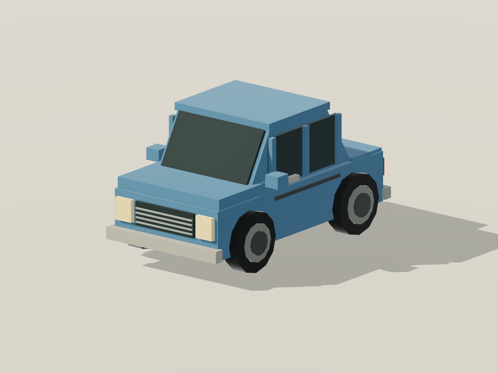
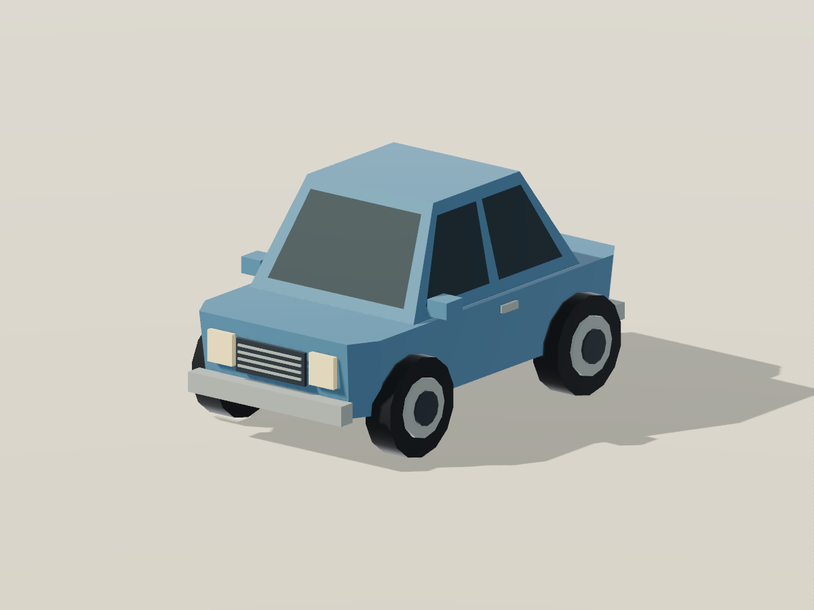
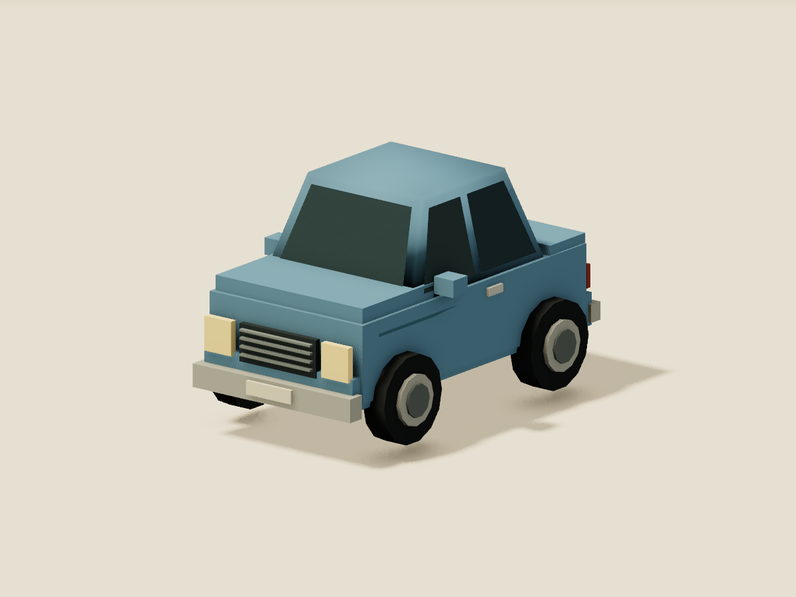
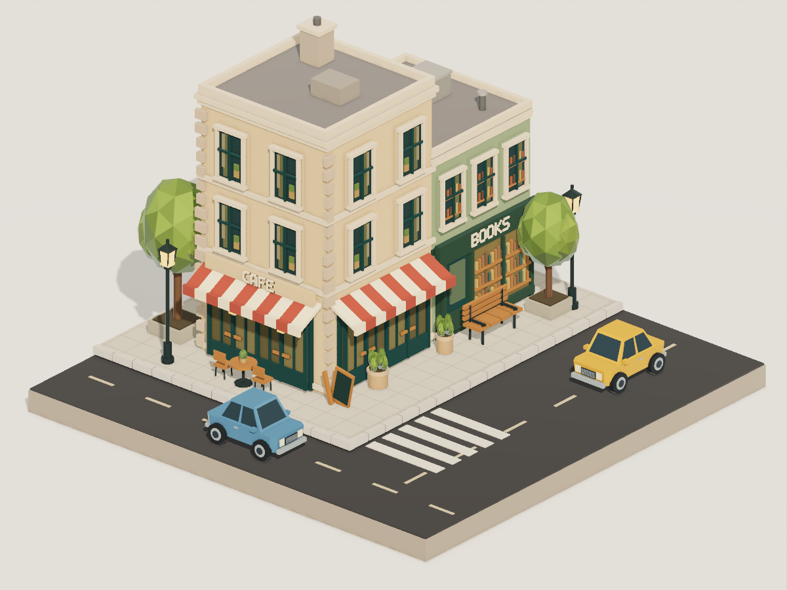
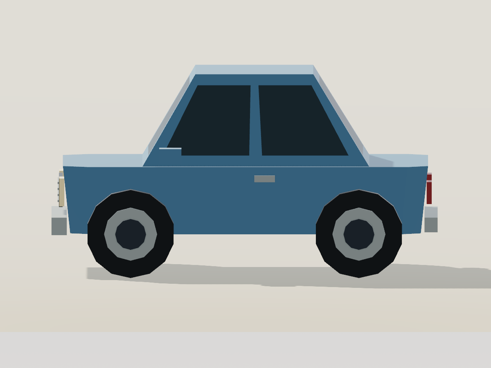
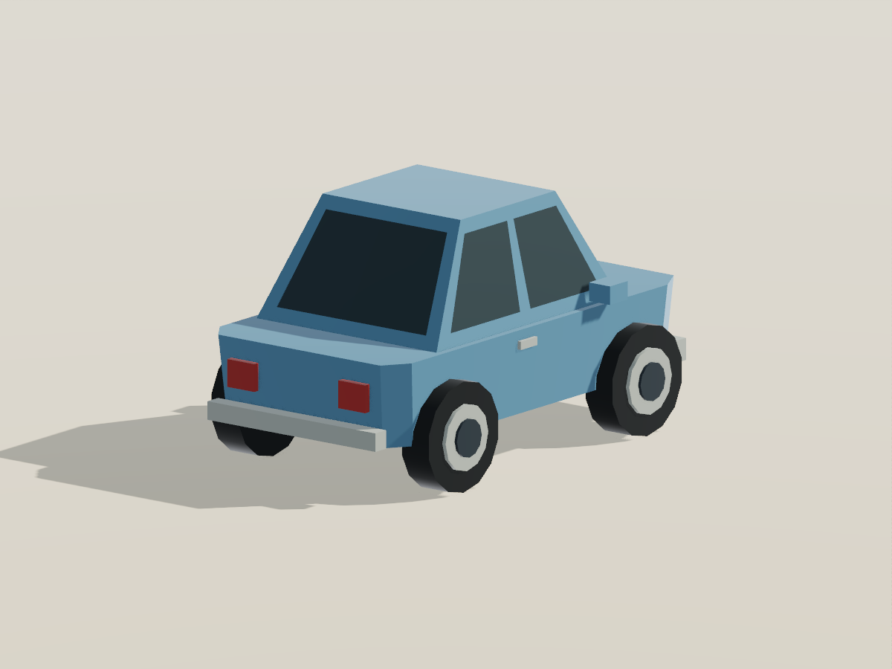

Separate blocks and slabs


The frozen car recipe, isolated for a close look. Constant-width cabin; 44 mesh parts.
The original Aperture car looked assembled from blocks because that is how its cabin and window surrounds were built. The revised car uses a tapered shell with window openings. Its pillars, roof rails and sills are part of the painted surface.

The frozen car recipe, isolated for a close look. Constant-width cabin; 44 mesh parts.

Actual openings in the body, filled by glass with exactly matching edges. 29 mesh parts.

Original benchmark car construction. Its glass is separate geometry too; the clean fit makes it look integrated.
Click any image to enlarge. Close-ups share camera framing. Aperture before/after shares lighting and post-processing; the new recipe also changes proportions, details and roughness. Three.js retains its original lighting, materials and effects. These are construction comparisons, not a controlled renderer test.
mesh.polygons() now accepts planar 3D faces with openings and generates the triangles, flat normals and UVs. Agents can describe a tapered cabin or a wall with windows directly. Aperture already supported raw triangle geometry; this removes the need to manage its indices for these surfaces.
Exact parity was verified for both the close-up and full street at 1200 × 900 using SwiftShader. Fewer parts are a structural result; authoring speed and dollar savings have not been remeasured.
The cars are replaced with the fitted recipe. Buildings, furnishings, camera, lights and post settings remain as authored in the original Aperture benchmark.



The geometry tests also verify a closed body-and-glass shell: every edge is shared exactly twice with opposite winding. Separate wheels, mirrors and lamps remain appropriate physical parts.
// side and window are planar arrays of [x, y, z] corners.
const paintedSide = mesh.polygons({
faces: [{ outline: side, holes: [window] }],
});
const glass = mesh.polygons({
faces: [{ outline: window }],
});Paint and glass use different materials and share the exact opening boundary. No hidden body face sits behind the glass. The same approach works for facade openings and other shaped low-poly panels.
Authoring guide · Reusable car recipe · Runnable example source · Full implementation report